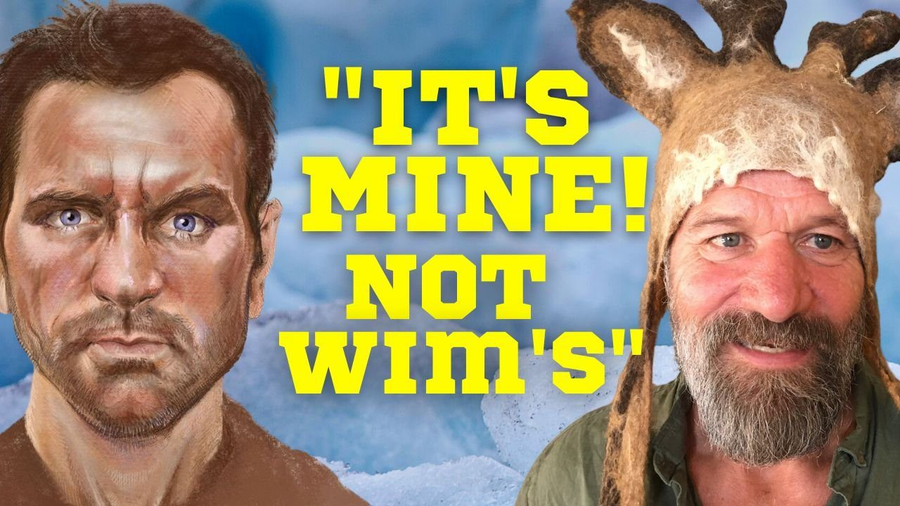

In What Doesn't Kill Us I alluded to how Wim Hof's son, Enahm Hof, created and ran his father's business affairs, and that he was often more of an obstacle to spreading the message of the revolutionary breathing and ice bathing techniques. When I first writing about Wim Hof back in 2013 I had a feeling that I would eventually have to look past just the techniques and into the business practices of the organization itself. As Wim Hof grew into an international brand that generates millions of dollars a year, along with movie deals and celebrity appearances, it has become harder and harder to ignore Enahm's influence on Wim's message. A few weeks ago I began digging into corporate records and interviewing eyewitnesses to the inner workings of Innerfire. I was shocked by what I found.
This week's video is a full exploration of Enahm's Wim Hof empire where nothing is as it seems. Indeed, Wim Hof has no control over his social media presence, no ownership stake in the company itself and doesn't even own the trademark to his own name. By his own admission the man who does, doesn't even regularly practice the breathwork or cold exposure. Wim is little more than an employee of the business that literally owns his name.
And that's not all. A quiet revolution forming among hundreds of Wim Hof Method instructors threatens to upend the entire organization. Enahm requires instructors to volunteer up to two weeks a year to lead on pricey winter travel expeditions for free while the organization pockets hundreds of thousands in revenue. Publicly available financial documents show exactly how much money the Hof empire makes every year.
This is not a video about a personal grudge I have against Enahm, but my sincere attempt to help preserve Wim's legacy for generations to come.
I spoke to Wim every step of the way, letting him know what I was finding and what I was planning to report. And, just in case people think I'm taking him out of context, I also include a link to his unedited response so you can see the nuance and decide for yourself how good my reporting is. (UPDATE: I had to take the unedited Wim video down because Enahm sent several threatening letters, including ten copyright strikes on my account. I am considering options on how to best get it to the public). People have been asking me to do this video for years. Now it's finally out in the public. If you love the Wim Hof method, you need to watch this video to the end.
New Book coming January 15th!
Anyone who has been following my writings on Wim Hof knows that my aim was to debunk him as a charlatan. By then I had spent several years investigating strange deaths at Buddhist meditation centers in India and Arizona among people who wanted to achieve superpowers through esoteric practices. I was documenting the strange collision between Eastern spirituality and American magical thinking that leads some people into madness. In the process I collected half-a-dozen journals of people who had died or ended up in mental asylums during meditation retreats to understand the mind of people who want to meditate their way to transcendence.
The book originally came out under the title A Death on Diamond Mountain, and had great reviews. Even so, it was never quite the book that I wanted it to be. It had the wrong title, was missing important chapters and had no photography. The Penguin imprint, Gotham that published it went out of business the week before the book's official launch, and still, they wouldn't allow me to read my own audiobook or have input on the title or cover. It was a saga.
Well I'm excited to announce that as of January 15th of this year, I've corrected the record. The Enlightenment Trap: Obsession Madness and Death on Diamond Mountain is the book that I always wanted it to be. I'm putting another video out about it next week, and if you're curious about the strange journey that some people take on the way to transcendence, I'd love you to pick up a copy. The audiobook and kindle edition are available now for pre-order.